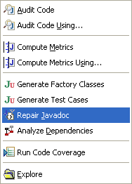

Javadoc Repair
|  | Each
time the menu item Options are provided via a preference page to determine what Java program elements the javadoc repair engine examines, and to set the format of generated text. Custom Javadoc tags may also be specified. |
The Compilation Unit Tree

The compilation unit tree (shown on the top left in the picture above) shows the compilation units within the selected scope for which there are suggested javadoc changes. Selecting a compilation unit will show the changes suggested for the elements in that compilation unit.
The context menu contains a menu item for saving the suggested javadoc changes under the selection, for expanding the tree and for removing a selection from view.
The Structure Tree
The structure tree (shown on the top right in the picture above) shows the elements in the selected compilation unit for which there are suggested javadoc changes. Selecting an element will restrict the comparison view (shown in the bottom half of the picture above) to that element. The context menu contains a menu item for expanding the tree.
The Comparison View
The comparison view (shown in the bottom half of the picture above) shows a comparison between the suggested javadoc changes (on the left) and the original version (on the right). The text in the left pane may be edited. An option is provided via the preference page that will cause the original and modified panes in the Javadoc editor to be transposed, so that the original code is shown on the left and the modified code is shown on the right.
The context menu contains the usual edit menu items.
 Copy All
from Right to Left Button
Copy All
from Right to Left Button
Clicking on the "Copy All from Right to Left" button will remove any proposed changes in the selected compilation unit, type or method.
Copy Current Change from Right to Left Button
Clicking on the "Copy Current Change from Right to Left" button will remove the current change in the selected compilation unit, type or method.
 Select Next
Change Button
Select Next
Change Button
Clicking on the "Select Next Change" button will highlight the next proposed change.
Select Previous Change Button
Clicking on the "Select Previous Change" button will highlight the previous proposed change.